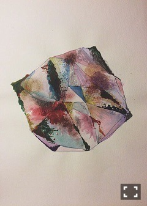
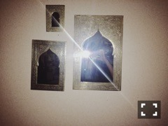

| 2015/11 13 Fri | 12345。678回目 |
ニットの季節∠( `°∀°)／
冬になると、ストールで
顔が埋まる服装が増えます。
ストールとか大好きです。

髪の量減らしてもらって
前髪も軽くなった！

お絵描き！
以前から描いて放置してたものに
いろんなものを付け足しました。
最近ラメとかキラキラしたのが
すごく好きでね、
これにラメも入れたんだけど
苔とか錆びとかシミとかと
一緒にするとより可愛く
見えちゃうのよね。


きらん
今、自分のなかでブームの食べ物は？
アンチョビ、空芯菜、チーズ！
タイとかインド料理！
学生のうちにやっておいた方がいいことややり残して後悔したことなどはありますか？
いっぱい遊ぶ！怒られる！ときめく！
まだカミングアウトしてない趣味とかありますか？
あります。多趣味だからね！
最近注目してるブランドはありますか？
SINA SUIEN
YEAH RIGHT!!
NORIKONAKAZATO
KOTONA
YUKIFUZISAWA
など！他にもあるけど書ききれない
一人飯はする？
焼肉、ステーキひとり飯もできます((*ﾟ∀ﾟ))
今、やってみたい演技の仕事は何？
ドラマ、映画、舞台？
ドラマ、映画、舞台？
え い が ！！！
何色が好き？みどり色？？
他には赤紫色とタマムシ色。
何色の財布使ってる？
都市型迷彩∠( `°∀°)／
最近の、楽屋の席で
まりかの席と近くのメンバーの配置は？？
まりかの席と近くのメンバーの配置は？？
そんなに決まってない。
最近だと気付いたらまいまいが
隣のことが多い気がする(^o^)
明日は乃木坂浪漫の
スペシャルイベント！
今週の乃木中は温泉の3人です。
今週が終わったら書きたいことが
いっぱいある(´* >*｀)、、
まりか
コメント(452)
2015/11/13 23:33